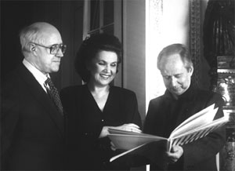

Questions classiques et vaguement idiotes, j'en conviens : Etes-vous chien ou chat, salé ou sucré ? En musique française contemporaine, la question deviendrait : êtes-vous Boulez ou Landowski ? Si vous ne souhaitez pas passer pour un attardé, répondez Boulez sans hésitation (et sans risque !), de toutes façons, personne ne vérifiera quelle musique vous écoutez réellement lorsque vous vous relevez en pleine nuit, sans doute aucune des deux !
Je prendrai cependant le risque de défendre l'oeuvre de Marcel Landowski (1915-1999) : écoutes à l'appui, je peux témoigner que je m'y suis attaché, au point de lui réserver une place non négligeable dans ma CD-thèque. Mieux encore, je réécoute régulièrement quelques oeuvres significatives, Leçons des Ténèbres, Messe de l'Aurore, Symphonie n°4, Concertos pour Ondes Martenot ou pour Basson, ... , toutes évoquées ci-dessous.
Pierre Boulez (1925-2016) n'a, il est vrai, que faire des multiples jugements qu'on porte sur sa personne et sa musique, depuis des décennies : sa réputation et sa fortune sont faites même si on oublie souvent qu'elles doivent bien plus à ses talents d'orateur, de pédagogue et surtout de chef d'orchestre que de compositeur. Dans ce dernier domaine, Boulez s'est autoproclamé pape d'une musique intellectualisée à l'extrême, héritée des recherches pionnières d'Anton Webern (1883-1945) et instaurant une sorte de démocratie imposée à tous les paramètres sonores (gamme, timbre, durée, ...). Quelques cardinaux, Elliot Carter (1908-2012) aux USA, Brian Ferneyhough (1943- ) en Grande-Bretagne, Helmut Lachenmann (1935- ) en Allemagne, ..., ont veillé, désespérément, à ce que seule sa parole postsérielle soit entendue partout dans le monde.
L'emblématique Marteau sans Maître de Boulez n'a plus rien de subversif; par contre, qu'est-ce qu'il reste ennuyeux ! On pourrait d'ailleurs en dire autant de la plupart de ses oeuvres écrites avant 1980. Depuis lors, l'homme et sa musique se sont humanisés. Explosante fixe, Répons ou Sur Incises proposent un catalogue de sonorités dont le chatoiement résulte de calculs très sûrs. Revers de la médaille, la durée fait souvent un sort à cette musique de la complexité : Webern avait pourtant indiqué que les oeuvres composées selon le système des 12 sons devaient être courtes si elles voulaient garder le contact avec la capacité de gestion d'un cerveau d'auditeur normalement constitué. Au-delà d'un horizon temporel même pas lointain, il ne subsiste de cette musique qu'une accumulation de stimuli sonores, certes fascinants lorsqu'ils sont considérés individuellement, mais lassants sur le plus long terme. Quant aux calculs savants que cette musique implique sans nul doute, ils ne prouvent qu'une chose, c'est que Boulez aurait fait un excellent mathématicien, une carrière qu'il avait d'ailleurs un temps envisagée.
Boulez jouit actuellement d'un prestige plus important que Landowski mais c'est pour toutes sortes de raisons extra compositionnelles. Certaines sont nettement avouables et d'autres le sont moins, qui l'ont vu intriguer pour dominer sans partage et heureusement, au bilan final sans réel succès, le paysage musical français.
Histoire d'une rivalité
En 1964, André Malraux, Ministre de la Culture du Général de Gaulle, prit conscience de l'urgente nécessité de réorganiser la vie musicale française d'après-guerre. L'enjeu était de taille car les candidats à cette fonction, Boulez et Landowski, appartenaient à des écoles radicalement opposées : Boulez rêvait d'imposer les techniques sérielles tous azimuts tandis que Landowski croyait dur comme fer aux vertus d'un système largement tonal. Boulez se sentit trahi lorsqu'il apprit que la commission d'évaluation avait désigné son rival au poste d'Inspecteur Général de la musique, du chant et de la danse, autant dire de Surintendant de la musique.
Vexé, Boulez quitta la France pour Darmstadt tout en guettant l'occasion de revenir au pays et d'établir la position dominante qui lui avait échappé. Elle se présenta, sous l'ère Pompidou, lorsqu'il réussit à convaincre les nouvelles sphères politiques qu'il était le Messie que la musique attendait et que Landowski n'était, selon ses propres termes, qu'un usurpateur falot et inconsistant. Autant Landowski était un homme affable et mesuré, autant Boulez pouvait être offensant, voire vulgaire.
Intrigant, habile et convaincant, Boulez décrocha des budgets considérables pour fonder l'IRCAM (en 1970), un centre de recherches en acoustique musicale. Plus tard, en 1976, il récidiva avec la fondation de l'Ensemble Intercontemporain, dévolu à l'interprétation de sa musique et de celles qu'il approuvait.
Cependant, de l'avis unanime, Landowski fit du bon travail pendant la durée de son mandat (1966-1974) : il réorganisa l'enseignement, fonda l'Orchestre National de France et remit de l'ordre à l'Opéra Garnier de Paris, par l'entremise de Rolf Liebermann. En province, son plan prévoyait que chaque région possède son conservatoire, son orchestre symphonique et sa maison d'opéra. Ce projet prit cependant du retard et Landowski ne put le mener à son terme, étant démis de ses fonctions à l'avènement du président, Giscard d'Estaing. D'aucuns s'étonneront que j'aie réussi à citer, en si peu de lignes, trois présidents successifs de la République Française mais c'est la conséquence des effets vaguement pervers du mécénat public, typique de la deuxième moitié du 20ème siècle.
Cette démission était, sans doute, prévisible voire programmée : il était, en particulier, malsain qu'un compositeur détienne les pleins pouvoirs pour gérer le délicat problème de la répartition des subventions en faveur de la création contemporaine. Son successeur, Jean Maheu, un énarque issu de la Cour des Comptes, était a priori moins suspect de partialité.
Boulez finit par imposer ses vues à tous les échelons décisionnels de la gestion de la musique en France. C'était pourtant remplacer un compositeur par un autre - sauf qu'il appartenait au clan d'en face - et on comprend que Landowski ait manifesté la plus extrême méfiance à l'encontre de cette abusive prise de pouvoir.
Landowski, qui n'avait nullement démérité, avait conservé quelques positions officielles (Il fut nommé Secrétaire perpétuel de l'Académie des Beaux-Arts en 1975) qui lui permirent d'entretenir une zone de résistance à la dictature boulézienne. En 1991, il posa un geste fort en fondant, avec son disciple Benoît Duteurtre, l'association Musique nouvelle en Liberté. Rien que l'énoncé des membres de son Comité d'honneur,
John Adams, Serge Baudo, Marius Constant, Jean-Yves Daniel-Lesur, Philip Glass, René Huyghe, György Kurtág, Claude Lévi-Strauss, Yehudi Menuhin, Olivier Messiaen, Serge Nigg, Maurice Ohana, Seiji Ozawa, Luis de Pablo, Arvo Pärt, Krzysztof Penderecki, Manuel Rosenthal, Mstislav Rostropovitch, Aulis Sallinen, Pierre Schaeffer et Iannis Xenakis,
montre clairement que Landowski l'a voulue respectueuse de toutes les esthétiques musicales. Beaucoup de jeunes musiciens français, Philippe Hersant (1948- ), Jean-Louis Florenz (1947- ), Guillaume Connesson (1970- ), ..., ont trouvé dans ce mouvement l'alternative salutaire à la voie de garage que Boulez réservait, sans vraiment s'en rendre compte, à ses trop fidèles disciples. Si la musique française renaît aujourd'hui, elle le doit en grande partie à la résistance organisée par Marcel Landowski.
Marcel Landowski compositeur
Christ Rédempteur (Rio)
Les Fantômes (Oulchy le Château)
Marcel Landowski est issu d'une famille d'artistes. Il est le fils du sculpteur d'origine polonaise, Paul Landowski (1875-1961) (Auteur de la statue qui veille sur Rio de Janeiro, édifiée avec le concours de l'ingénieur brésilien, Heitor da Costa Silva, ainsi que de l'ensemble commémorant la victoire de la deuxième bataille de la Marne, en 1918) et l'arrière-petit-fils, par sa mère, du violoniste et compositeur belge, Henri Vieuxtemps (1820-1881). Sa soeur, Françoise (1917-2007), fut à la fois pianiste et peintre.
Il a étudié le piano avec Marguerite Long et la direction d'orchestre avec Pierre Monteux. Il s'est tôt lié d'amitié avec le Groupe des Six, en particulier Darius Milhaud (1892-1974) et surtout Arthur Honegger (1892-1955) qui eut quelque influence stylistique sur lui, à ses débuts.
Compte tenu de l'énorme activité que Landowski a déployée dans l'administration de la musique, on ne manque pas d'être surpris par l'étendue du catalogue de ses oeuvres. Il couvre tous les genres avec une prédilection pour la voix et l'orchestre.
Landowski s'est spontanément démarqué du courant sériel qui a largement irrigué (ou desséché, c'est selon) le paysage musical des années 1950-80. Son langage est, au contraire, foncièrement tonal tout en évitant le piège néo-classique. La musique de Landowski peut être mise entre toutes les oreilles : elle traite, dans un idiome constamment accessible, des thèmes d'inspiration humaniste, philosophique voire religieuse. Les formes adoptées sont on ne peut plus traditionnelles : Symphonies, Concertos, Messes, Cantates, Opéras. Il a moins écrit pour les formations de chambre ou pour les instruments solos.
Les salles de concerts programment rarement ses oeuvres en-dehors de l'hexagone. Dès lors, le CD est le meilleur moyen de faire connaissance avec cette musique attachante. La firme Erato a publié en son temps un coffret de 9 CD reprenant quelques oeuvres phares. Quelques CD isolés, malheureusement pas toujours de qualité exemplaire, complètent l'ensemble si bien qu'un panorama assez large est possible. Nous privilégierons les oeuvres importantes d'accès aisé :
Les 5 Symphonies, de l'encore classique 1ère (Jean de la Peur) aux magnifiques 4ème et 5ème , ne déparent nullement le répertoire du genre au 20èmesiècle. Les Symphonies 2 & 3 "Des espaces", sont disponibles à l'écoute intégrale sur le site de l'INA (Institut National de l'Audiovisuel, faites une recherche "audio" à partir du mot clef "Landowski").
Une brochette de Concertos pour les instruments les plus divers : Piano (2), Violon , Violoncelle, Flûte (2), Trompette, Trombone, Basson (proposé ici en écoute intégrale : à ne pas manquer !), Orgue, et le plus surprenant de tous, pour Ondes Martenot (Un instrument à oscillateur électronique présenté par Maurice Martenot en 1928, honoré aussitôt par Messiaen, Martinu, Varèse, Jolivet et beaucoup d'autres mais supplanté aujourd'hui par l'Ondéa, plus performant).
Landowski a puisé quelques-unes de ses meilleures inspirations dans des thèmes religieux. Parmi les oeuvres particulièrement réussies, on retiendra : Les Rois Mages, la Cantate Jésus, là, es-tu ? et deux oeuvres d'esthétiques nettement apparentées, la Messe de l'Aurore et les superbes Leçons des Ténèbres .

En compagnie de Galina & de Slava
Landowski s'est essayé à l'opéra à plusieurs reprises mais force est de reconnaître que ni "Le Rire de Nils Halerius", "Le Fou", "L'Opéra de Poussière", "Les Adieux", "Galina" (dédié en 1996 à la cantatrice, Galina Vichnevskaïa-Rostropovitch) ni même Montségur, qui passe pour le plus réussi de tous, n'ont connu le succès espéré. Montségur est, à ma connaissance, le seul à avoir été enregistré.
Le couple russe avait déjà reçu en dédicace "Un enfant appelle" en 1978 et "La Prison" en 1981, pour ... soprano, violoncelle & orchestre, évidemment.
Landowski a encore écrit, pour la scène, des ballets (Rabelais, Ballets des Jeux du Monde, Les Hauts de Hurlevent, Le Ventriloque, Abîmes, La Leçon d'Anatomie, Le Fantôme de l'Opéra) et des oeuvres pour enfants (Les Notes de Nuit, La Sorcière du Placard à Balais, La vieille Maison, Le petit Poucet), sa façon à lui de contribuer à l'éducation musicale de la jeunesse. Il s'est même égaré un temps (jusqu'en 1960) dans la musique de films, hélas médiocres, mais ce genre mineur ne convenait pas à la conception qu'il avait de son art.
Jamais, j'en conviens, une chronique n'a mieux mérité sa place dans la rubrique des "Billets d'humeur". D'aucuns regretteront que l'échelle habituelle des valeurs y ait été intentionnellement bousculée, prônant la musique de Landowski plutôt que celle de Boulez. Je ne nie pas qu'il y a là une part de provocation mais le fait est que j'ai apprécié le rôle citoyen joué par Landowski : il a mis son sens inné de l'organisation au service de la communauté musicale de son pays tout en proposant au grand public une musique accessible et de qualité.